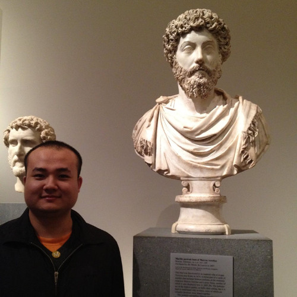

Xiang Zhang, Ph.D. Student
Computer Science Department
Courant Institute of Mathematical Sciences
New York University
xiang.zhang [a t] nyu.edu
Room 1231, 715 Broadway, New York, NY 10003
I am a second year Ph.D. student under the advisement of professor Yann LeCun with an interest in machine learning, including deep learning,
numerical optimization, and some learning theory. Before being a Ph.D. student, I already spent 2 years as an M.S. student at NYU, during which time I participated
in some research projects. Before coming to the U.S., I was an undergraduate student at the School of Computer Science and Technology,
Tianjin University, conducting research in computational photography advised by professor Shiguang
Liu.
If you need more information, my resume is available by email.
Publications
Google Scholar profile
- Pierre Sermanet, David Eigen, Xiang Zhang, Michaël Mathieu, Rob Fergus, Yann LeCun. OverFeat: Integrated Recognition, Localization and Detection using Convolutional Networks. International Conference on Learning Representations 2015
- Shiguang Liu, Xiang Zhang. Image Colorization Based on Texture Map. Journal of Electronic Imaging, 2013, Volume 22, Issue 1, 01311
- Shiguang Liu, Xiang Zhang. Automatic Grayscale Image Colorization using Histogram Regression. Pattern Recognition Letters, 2012, Volume 33, Issue 13, Pages 1673-1681.
- Shiguang Liu, Hanqiu Sun, Xiang Zhang. Selective color transferring via ellipsoid color mixture map. Journal of Visual Communication and Image Representation, 2012, Volume 23, Issue 1, Pages 173-181.
- Xiang Zhang, Ce Yu. Fast n-point Correlation Function Approximation with Recursive Convolution for Scalar Fields. In IEEE Cloud Computing Technology and Science (CloudCom) CloudCom 2011, Pages 634-639.
- Xiang Zhang, Shiguang Liu, Texture Transfer in Frequency Domain. IEEE 2011 Sixth International Conference on Image and Graphics(ICIG), Pages 123-128.
- Shiguang Liu, Xiang Zhang, Jingting Wu, Jizhou Sun, Qunsheng Peng, Gray-scale Image Colorization based on the Control of Single-parameter. Journal of Image and Graphics (In Chinese), 2011, Volume 16(7), Pages 1297-1302.
Blog Posts